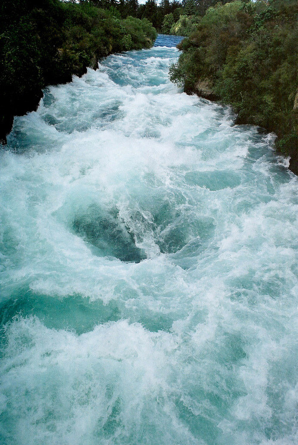

17th International Conference on Environment Science and Technology
CEST2021
1-4 September 2021
@Rhodes, Greece
Established in 1989,the International Conference on Environmental Science and Technology (CEST)
is a leading environmental conference where top experts, scientists, entrepreneurs,
representatives of public administration and social initiatives present state-of-the-art research
on current and emerging environmental issues. CEST is thus a platform where academia and
business converge; where academic research, innovative ideas and solutions serve as the basis
for a cleaner, healthier and more sustainable environment.
The conference is organised by the Global Network of Environmental Science and Technology
jointly with the University of the Aegean (Greece) and the National and Kapodistrian University of Athens (Greece).
CEST2021 is academically supported by the University of Salerno (Italy), the University of Cincinnati (USA)
and the Imperial College London
(UK) as well as a group of distinguished scientists – the members of the Conference Scientific Committee.
CEST2021 is under the patronage of UNESCO’s Water Assessment Programme, International Water Association (IWA),
A.C. Laskaridis Charitable Foundation and under the auspices of the Municipality of Athens. The event will be held in
Athens from 1 to 4 September 2021.
The previous event, CEST2019, was the most successful event since the series was initially launched in 1989,
with 420 participants from 81 countries originating from 6 continents
(Europe, Asia, Africa, North America, South America and Australia).
The programme included over 550 presentations (oral and poster) from 28 unique research areas. Participants also
benefited from the interaction with 25 distinguished scientists that were invited and delivered keynote and
plenary talks.
All the papers that are selected for either oral or poster presentation undergo a review process.
As a result of the improving quality of the papers in previous conferences, their proceedings have been
included in databases, such as Science Citation Index (ISI). Since 2015, the papers that are presented
in CEST, are submitted to cooperating journals for review and publication in special issues. The papers
from CEST2019 have been accepted from Springer for publication in SPRINGER proceedings.

Contact us
Phone: (+30)210-6492451, (+30)210-6492452
Fax: (+30)210-6492499
Technical programme, scientific matters:
cest2021@aegean.gr
Online registration, submission, payment:
cest@gnest.org
CEST2021
Copyright © 2020 All rights reserved
Terms | Privacy